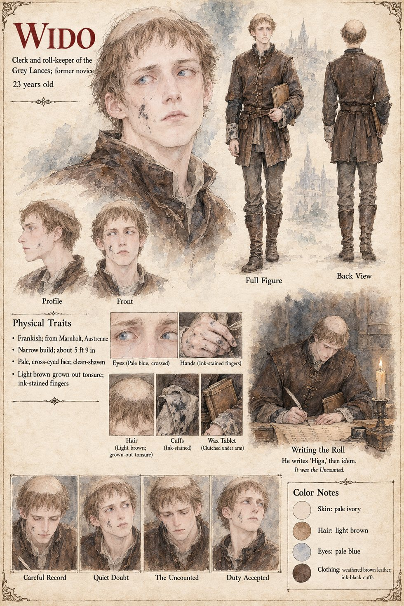

Wido
Clerk and roll-keeper of the Grey Lances, former novice, later roll-keeper of the Order · 23 years old
A pale, cross-eyed, ink-stained lance of twenty-three who was a novice in a monastery until a disagreement about a goat, and the only man in Hagen Brandt's Grey Lances who can be trusted with a column of figures or a secret. At the Salt Landing in the third week of Lorren, when Brandt puts his mark to the Duke of Tarnwald's contract with the eighty-first name still to be entered, the eighty-first a foreigner who carries two swords, Wido spends an hour trying to spell what the foreigner has told him. On the first line he writes Higa, which is as much as his pen can make of it, and on the second, with the weary economy of a clerk who has been asked to write a stranger's name twice, the single word idem. It is the only joke of Wido's life, and the manuscript says it will outlast him by several centuries and be believed.
On the Uncounted night, in the second rank before the Low Forge, with his tablet under his arm and his cross eyes fixed on a point rather to the left of the captain's head, he hears the sexton in the bell-loft toll midnight, says in a voice that carries further than he means that it is past the hour, and is then asked by Brandt what day it is. He says that it is the Uncounted; that no contract can be signed upon it; that the Company's engagement with the Duke was drawn to the last day of Mavren and not to the Uncounted; and that no debt can be reckoned to fall due. Brandt sits down on the threshold, and the eighty lances sit after him. When the Order of the Hundred and Forty-Four is founded, Brandt lends him to the Crown for the day, and he is not got back: he keeps the roll, a hundred and forty-two lines in a hand of the most appalling regularity, and at the place numbered, for want of a better number, the hundred and forty-fourth he writes on the line for the hundred and forty-third Higa and on the next idem. It is entered. It will be believed: the chronicle of the Black Mare will make of it the twin Saracen knights Higa and Idem, who stood in the middle of the Arches with one blade apiece and cut their way through seventy-one, and the twin who never existed will stand for four hundred years in the porch of the cathedral in two identical statues, carved by a mason who had never seen the man. There was only ever one of them, the Eastman, whom Case 2231 knows as Tomobe no Higaide.
The manuscript gives his age, his eyes, his ink and his goat; the sheet's Frankish origin in Marnholt, narrow build of about 5 ft 9 in, clean-shaven face, light brown grown-out tonsure, wax tablet, weathered brown leather and ink-black cuffs are its own, as are its panel Writing the Roll: He writes "Higa," then idem. It was the Uncounted and its expression panels Careful Record, Quiet Doubt, The Uncounted and Duty Accepted.
“It was entered. It would be believed.”